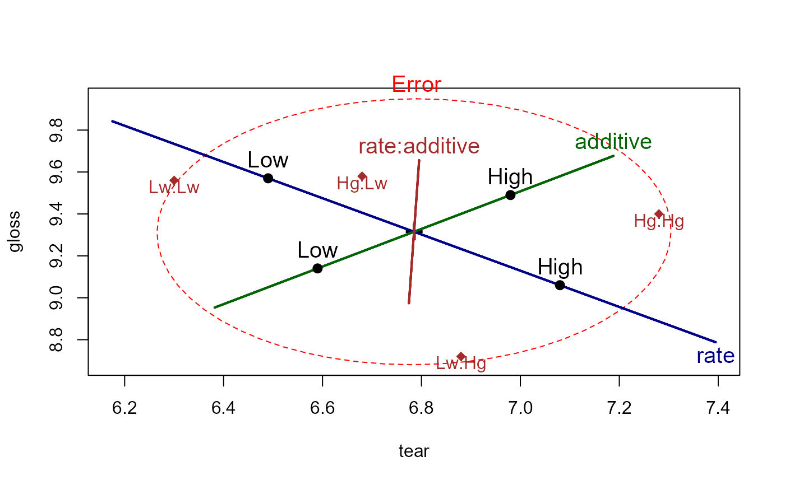

termMeans.RdtermMeans is a utility function designed to calculate
means for the levels of factor(s) for any term
in a multivariate linear model.
termMeans(mod, term, label.factors=FALSE, abbrev.levels=FALSE)An mlm model object
A character string indicating a given term in the model. All factors in the term must be included in the model, even if they are in the model data frame.
If true, the rownames for each row in the result include the name(s) of the factor(s) involved, followed by the level values. Otherwise, the rownames include only the levels of the factor(s), with multiple factors separated by ':'
Either a logical or an integer, specifying whether the levels values
of the factors in the term are to be abbreviated in
constructing the rownames. An integer specifies the minimum length
of the abbreviation for each factor in the term.
Returns a matrix whose columns correspond to the response variables
in the model and whose rows correspond to the levels of the factor(s)
in the term.
factors <- expand.grid(A=factor(1:3),B=factor(1:2),C=factor(1:2))
n <- nrow(factors)
responses <-data.frame(Y1=10+round(10*rnorm(n)),Y2=10+round(10*rnorm(n)))
test <- data.frame(factors, responses)
mod <- lm(cbind(Y1,Y2) ~ A*B, data=test)
termMeans(mod, "A")
#> Y1 Y2
#> 1 17.00 12.25
#> 2 9.50 10.75
#> 3 13.75 2.00
termMeans(mod, "A:B")
#> Y1 Y2
#> 1:1 10.0 10.0
#> 2:1 3.0 19.5
#> 3:1 17.5 6.0
#> 1:2 24.0 14.5
#> 2:2 16.0 2.0
#> 3:2 10.0 -2.0
termMeans(mod, "A:B", label.factors=TRUE)
#> Y1 Y2
#> A1:B1 10.0 10.0
#> A2:B1 3.0 19.5
#> A3:B1 17.5 6.0
#> A1:B2 24.0 14.5
#> A2:B2 16.0 2.0
#> A3:B2 10.0 -2.0
if (FALSE) {
termMeans(mod, "A:B:C") # generates an error
}
plastic.mod <- lm(cbind(tear, gloss, opacity) ~ rate*additive, data=Plastic)
colors = c("red", "darkblue", "darkgreen", "brown")
heplot(plastic.mod, col=colors, cex=1.25)
# add means for interaction term
intMeans <- termMeans(plastic.mod, 'rate:additive', abbrev=2)
points(intMeans[,1], intMeans[,2], pch=18, cex=1.2, col="brown")
text(intMeans[,1], intMeans[,2], rownames(intMeans), adj=c(0.5,1), col="brown")
